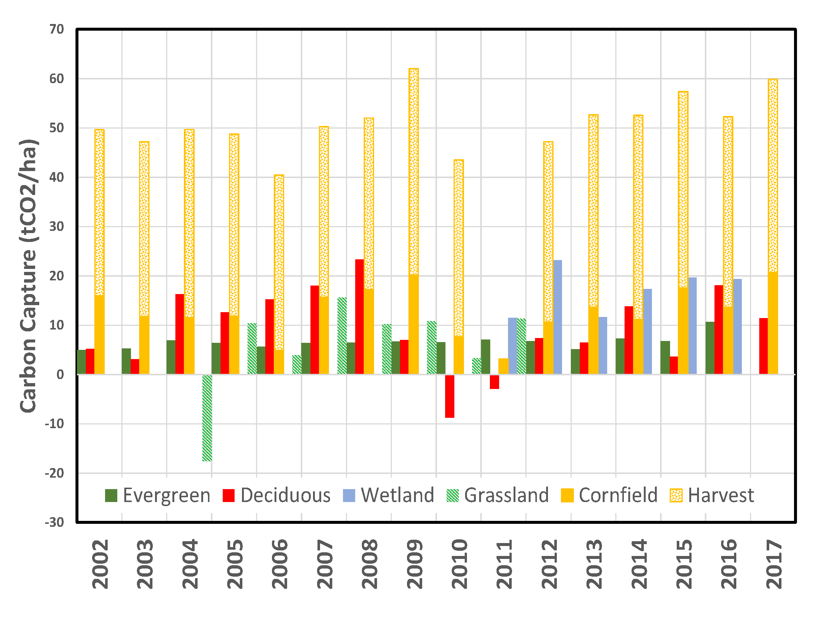
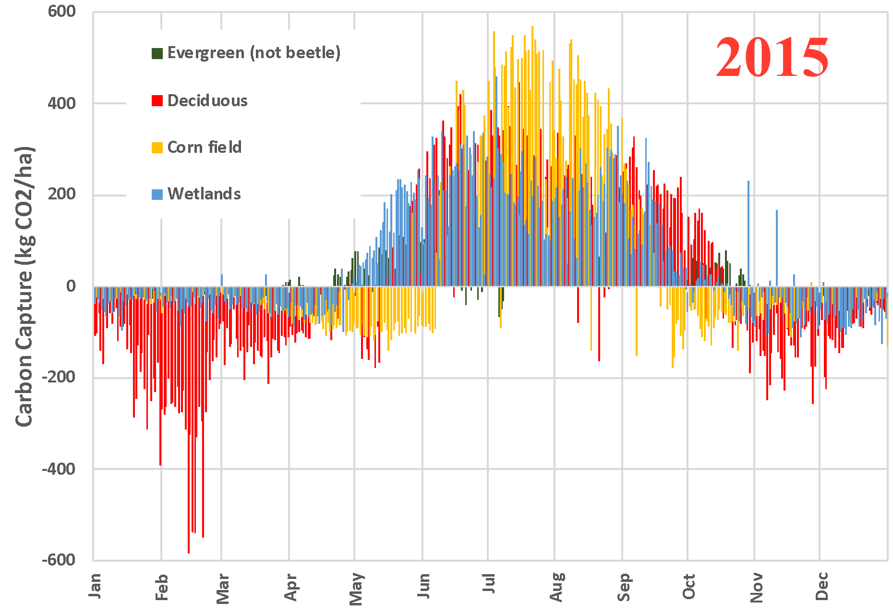
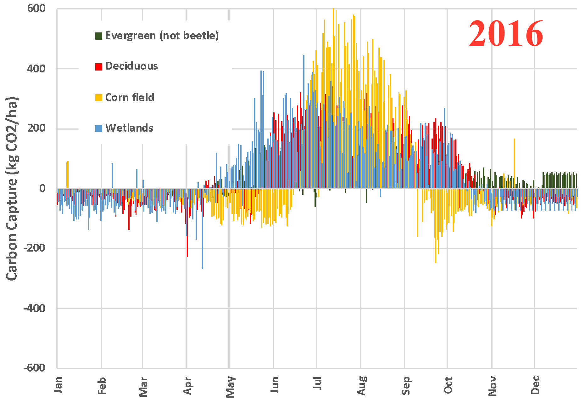

For the past couple of issues, I’ve focused on two questions:
-
First, in any given area, are trees the best land use for carbon sequestration?
-
Second, does it matter what is planted?
We have begun to address the first question, and the tentative answer is that marginal forests, particularly in coastal mountains, show higher efficiency (Net/Gross) than either grasslands or rainforests. As with any data, there are many possible reasons for this, and you’re welcome to speculate. But, it is somewhat unsatisfying because the process for determining the net productivity of an area of land from satellite data relies on an empirical carbon capture model. Further, coastal mountain ranges aren’t areas where humans generally choose different uses for land, so it may be a distinction without a difference.
We then looked at direct measurements of ecosystem carbon retention, where the flow of CO2 is observed directly over selected areas, using a method known as Eddy Flux Covariance. This method is the basis of carbon capture models to interpret satellite images, so there’s a direct relationship. In this data, we observed that the data varies regionally and annually, but ecological variability like pest infestations and wildfires can obscure the answer.
Last time, we looked at five sites across the United States to see if we could make sense of the measurements. These sites included two evergreen stands in Colorado’s Front Range with divergent outcomes attributed to pine beetle infestation. Aiming for clarity, I’ve swapped out the beetle infestation site with a native prairie site 1 west of Chicago at the Fermi National Accelerator. I’ve also corrected the “cornfield” because it is “harvested”. [Naturally, “harvest” means that a significant amount of the captured carbon is removed from the respiration measurement. But it doesn’t mean that it’s not turned back into CO2 once humans use it!] Here’s the revised year-over-year picture:

From this perspective, a few things have become more evident. To extract CO2 from the atmosphere, the best land use is an actively managed cornfield, mainly because carbon (in the form of grain) is harvested (removed from the system being measured). Of course, this doesn’t consider the carbon cost of active management, but such “carbon accounting” approaches are feel-good “offsets” that lead to economic net-zero rather than engineering net-zero. That’s a vital distinction, so I’m sticking with what is observed because that’s what counts. Most of the corn harvest is used for food, fuel, or feed, converting it back into CO2 but generating economic value in the process. For unmanaged lands, wetlands > deciduous forest > grassland > pine forest, a factoid that can also be explained in many ways. However, there’s no reason to believe this is anything more than an isolated trend since some years show a different rank order.
What does the yearly cycle look like? Unfortunately, the data isn’t uniformly available, and there’s almost too much of it, but let’s look at two consecutive years across ecosystems [No information is available for the grassland site in these years]:


A clear “growing season” lasts from early spring to late fall, approximately May through October, when the ecosystem absorbs carbon dioxide. In natural ecosystems, net carbon capture starts as soon as the season begins. But, because corn is an annual crop that grows from seeds each season, there is a lag in the onset of absorption: When the land is bare (before the corn seedlings become established), there is a period where the cornfield releases CO2 while trees absorb it. But, during the summer months, when corn is actively growing, the cornfield absorbs about twice as much daily.
Various downward and upward “spikes” are probably weather-related or artefactual. For example, in February 2015, the Harvard deciduous forest released a lot more CO2 than it did the following year, yet that February was colder than average, and the area was under about 2 feet of snow (vs. 2 inches in 2016) 2 . Each day could provide a different explanation for variation, so it is more informative to look for trends.
The bottom line: It matters both what is being grown and how. Despite environmentalists’ condemnation, humans positively affect carbon sequestration when managing ecosystems. Implications that “natural ecosystems” is somehow better than “managed agriculture” are not supported by observations.
Next time, we’ll look at different types of managed agriculture to see if we can get even more clarity. We will look at different annuals (which is what most of agricultural land is used for) and perennials (if available).